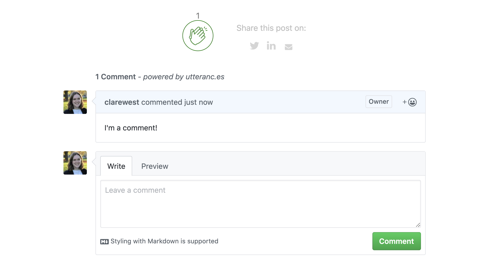

I don’t track visitors on this blog, and while that is nice for their privacy and for my conscience, it does sometimes feel like talking into the void. So I recently added three features for readers to communicate: comment functionality via utterances, an applause-button by Colin Eberhardt, and some buttons for sharing posts to social media.

Comments, claps and social media buttons
💬 Utterances
Utterances is an open source comment widget built on GitHub issues. I really like how lightweight and unobtrusive it is. Not to mention, it was ridiculously easy to set up.
The utterances documentation even walks you through your options and generates the script to add to your site. The process is:
- Choose or make a GitHub repo where the issues will live, and make sure the utterances app is installed on it, so it can post issues and comments: clarewest/blog-comments
- Choose how you want your blog-post-to-GitHub-issue mapping to work (I’m using path name, so the title of each issue is the path to the blog post: clarewest/blog-comments/issues
- (Optional) Choose a label that will be assigned to the issues on the repo
- Choose your colour scheme (mine is GitHub light #basic)
- Get your script, which will look something like this:
<script src="https://utteranc.es/client.js"
repo="clarewest/blog-comments"
issue-term="pathname"
label="comment"
theme="github-light"
crossorigin="anonymous"
async>
</script>
If you’re on blogdown, your theme may already support utterances. In that case, you don’t even have to put this script in yourself. It’s okay to feel a little smug if you chose a theme like this.
In my case, this was already in layouts/partial/utterances.html:
<section id="comments">
<div class="py-3 content">
<div class="container">
<div class="row justify-content-center">
<div class="col-sm-12 col-lg-8">
<div class="comments">
<script src="https://utteranc.es/client.js" repo="{{ .Site.Params.commentsrepo }}"
issue-term="pathname" label="comment" theme="github-light" crossorigin="anonymous" async>
</script>
</div>
</div>
</div>
</div>
</div>
</section>
As you can see, the theme author has included a .Site.Params variable called commentsrepo that I can use, so all I had to do is add this to my config.yaml file:
params:
commentsrepo: clarewest/blog-comments
And just like that, we have comments! Your readers have to have a GitHub account in order to leave comments, which is a blessing or a curse, depending on your point of view.
If you are interested in migrating from Disqus and want to keep your comments, check out this blog post by Nan Xiao.
👏 Applause
Every millenial knows that commenting is intimidating. A nice amiable non-verbal ‘like’ is my preferred way to show appreciation.
I found this brilliant applause-button by Colin Eberhardt, which allows you to leave a friendly little clap of appreciation.
Include the small JavaScript and CSS files in your header (either download or source them from the website above):
<head>
<link rel="stylesheet" href="applause-button.css" />
<script src="applause-button.js"></script>
</head>
Then insert the element wherever you want:
<div class="container">
<applause-button style="width: 58px; height: 58px;"/>
</div>
It seems super easy, but I had a couple of problems that left me a bit perplexed (okay fine, I sulked and ate half a toblerone).
First, I had trouble making the button display the total number of claps. The number 1 appeared when I clicked it, but didn’t survive a page refresh.
You can see the number of claps recorded for a page through a request to the API:
curl -e robot https://api.applause-button.com/get-claps?url=https://clarewest.github.io/blog/post/claps-and-comments-in-blogdown/
1
This is also how the JavaScript fetches the number of claps to display on the page. Calling the API showed I had some claps for the page, but they weren’t showing up on the applause button on the website.
Eventually, I worked out the problem(s):
- The button automatically gets the number of claps for a URL based on the HTTP Referer header, or you can specify the URL using
url = "my/blog/post/url". - The API ignores requests without a Referer specified as a way of screening out bots.
The Referer request header contains the address of a page making a request, so that the server can identify where the request is coming from. A request might be, for example, following a link to another website, or, in this case, an API call.
You can control how much information is sent in the Referer request header using a meta element in the HTML page. The default is no-referrer-when-downgrade, which means send my URL unless it’s going to a domain less secure than mine (i.e. HTTPS -> HTTP).
My problem was that my referrer was set to "no-referrer" which sends an empty string - this meant that the script couldn’t send the blog post’s URL with the request automatically, and, even when I specified the URL explicitly, the API calls from my blog posts were being ignored because I had sent no Referer. As a result the number of claps wasn’t being displayed.
I changed my header tag from no-referrer to strict-origin, which sends the origin of the URL, unless it’s to a less secure destination.
You could also use {{ .Permalink }}, the Hugo parameter for the URL of the page, but I’m not sure where else this will be used so I thought it would be better not to use the entire URL if I can help it. If you know more about this and think I made a bad choice, please let me know!
<meta name="referrer" content="no-referrer"> <!-- no claps for you -->
<meta name="referrer" content="strict-origin">
I also explicitly included the URL in the element in each blog post, to make sure the count still works. To include this button in each blog post, I added the element to my single.html partial template.
<applause-button style="width: 50px; height: 50px;" multiclap="true" url="{{ .Permalink }}"/>
The multiclap="true" means that one user can clap more than once - so, go crazy!
I originally just put it at the bottom, but a cruel-but-kind friend pointed out that I should put it at the top too, as people are much less likely to reach the end of the post.
💌 Share to Social Media
Finally, I wanted to add some buttons at the bottom of my post to make it easy to share the post.
I found a script for that from hugocodex.org, a website by J.H. van der Schee showcasing Hugo scripts. It includes icons with sharing links for a range of social medias (including the relevant fill colour on hover). You just have to download share-buttons.html to your layouts/partials directory, and include it where you want it on your website (in my case, single.html):
{{ partial "share-buttons.html" . }}
The script is quite long, so I won’t share the whole thing here, but I did make a couple of changes.
First, I removed Facebook and Pinterest (personal taste) as well as Google plus (which apparently no longer exists).
Second, the script uses a URL for sharing to Twitter that no longer works, so I updated it:
The non-working method in the script:
<div class="twitter" title="Share this on Twitter" onclick="window.open('http://twitter.com/home?status={{ $pageurl }}');">
The replacement method:
<div class="twitter" title="Share this on Twitter" onclick="window.open('http://twitter.com/intent/tweet?url={{ $pageurl }}');">
And that’s it!
Please feel free to comment, clap, and share this post 🌞